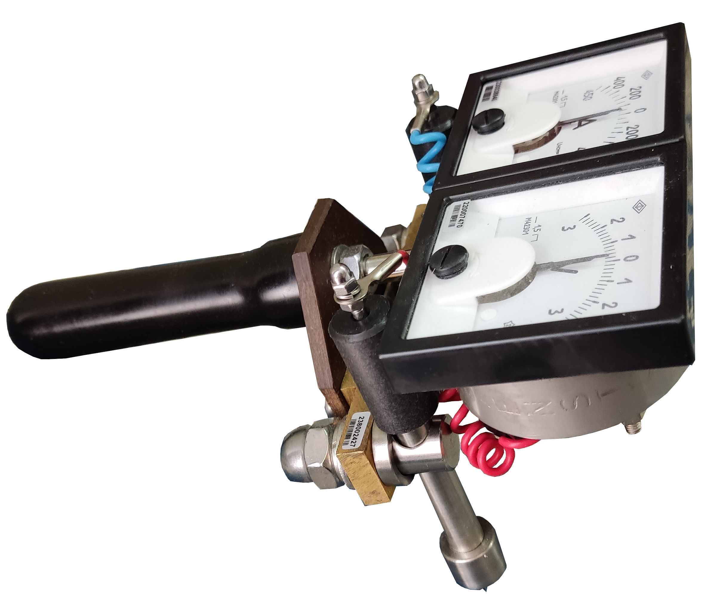

Для перехода щелкните по ссылке на желтом фоне:
Вилки нагрузочные для проверки кислотных аккумуляторов
Смотреть подробно:
(для перехода щелкните по ссылке или по картинке)
Вилка нагрузочная НК-600 / НК-600У
Вольтметр 3-0-3 В; Амперметр 300-0-300 А; кл. точн. 1,5; плавная регулировка тока; нагрузочный ток от 170 до 300 А при 1,8 В.

Предназначена для контроля тепловозных стартерных аккумуляторов 2ТН-450 током нагрузки до 450А.
Вольтметр 3-0-3 В; Амперметр 450-0-450 А; кл. точн. 1,5; регулировки тока нет; нагрузочный до 450 А.
Вилка нагрузочная НК-500 (НК-500Л)

Вольтметр 3-0-3 В; кл. точн. 1,5; ступенчатая регулировка тока; нагрузочный ток 65 А, 130 А и 250 А при 1,8 В.
НК-500 исполнение "Л" (НК-500Л) - комплектуется дополнительным сопротивлением (0,030±0,002) Ом.
Вольтметр 3-0-3 В; кл. точн. 1,5; ступенчатая регулировка тока; нагрузочные токи:
- 65 А, 130 А , 250 А при 1,8 В - для кислотных аккумуляторов
- 50 А, 70 А, 110 А при 1,0 В - для щелочных акумуляторов
- плюс нагрузочные сопротивления 0,020 Ом, 0,025 Ом, 0,030 Ом, 0,033 Ом.
По дополнительным сопротивлениям заменяет 2ДБ661-141М.
Вилка нагрузочная универсальная НМ-300 (НМ-300Л)

Вольтметр 3-0-3 В; кл. точн. 1,5; ступенчатая регулировка тока; нагрузочные сопротивления для проверки свинцовых стартерных
аккумуляторов емкостью 40...100 Ач; 100...145 Ач; 145...200 Ач.
Нагрузочная вилка НМ-300, исполнение "Л" (НМ-300Л) - комплектуется
дополнительными сопротивлениями (0,020±0,002) Ом;(0,025±0,002) Ом;
(0,030±0,002) Ом; (0,033±0,002) Ом.
Испытательный нагрузочный прибор ИНП-110

Тестер силового электрооборудования автомобиля АСГ-12-500

Вольтметр 20-0-20 В (возможно исполнение
36-0-36 В), класс точности 1,5; амперметр 500-0-500 А (возможно
исполнение 250 А, 300 А, 400 А, 750 А, 1000 А) класс
точности 1,5.
Тестер контролирует состояние автомобильной акумуляторной батареи,
состояние стартера, состояние генератора, пусковой ток стартера, ток и
напряжение зарядки и т. п.
Вольтметр 20-0-20 В (возможно исполнение 36-0-36 В), класс
точности 1,5; амперметр 500-0-500 А (возможно исполнение 250-0-250 А,
300-0-300 А, 400-0-400 А, 600-0-600 А, 750-0-750 А, 1000-0-1000 А).
Испытательный нагрузочный прибор ИНП-А-24-12

Вольтметр 0-30 В, класс точности 1,5;
амперметр 0-20 А, класс точности 1,5. Нагрузочный ток, обеспечиваемый
прибором 11,9...12,7 А,
при напряжении испытуемой батареи 25,0 В.
Прибор контролирует степень заряда авиационных аккумуляторных батарей 12-САМ-28 и 12-САМ-55.
Примечание: Здесь и далее по тексту под аккумулятором понимается одиночная свинцово-кислотная аккумуляторная ячейка (банка) номинальным напряжением 2,0 В.
Не проверяйте кислотные аккумуляторы нагрузочными вилками, предназначенными для щелочных аккумуляторов!
При такой проверке не обеспечивается указанный на вилке нагрузочный ток!
Пример: Проверка (тест) кислотного аккумулятора производится нагрузочной вилкой для щелочных аккумуляторов:
Нагрузочная вилка для щелочных аккумуляторов рассчитана на ток Iщел = 100 А имеет нагрузочное сопротивление (рассчитанное на напряжение щелочного
аккумулятора 1,2 В) и равное:
Rнагр = Uном.щел. : I щел. = 1,2 В : 100 А = 0,012О Ом,
где Uном.щел. = 1,2 В - номинальное напряжение кислотного аккумулятора.
При проверке такой вилкой кислотного аккумулятора (напряжение 2 В) фактический нагрузочный ток будет:
Iкисл. = Uном.кисл. : Rнагр. = 2,0 В : 0,012 Ом = 167 А,
где Uном.кисл. = 2,0 В - номинальное напряжение кислотного аккумулятора.
Вывод: При проверке
кислотного аккумулятора нагрузочной вилкой для щелочных аккумуляторов
на 100 А , фактический нагрузочный ток будет не 100 А, а 167 А!
В результате при проверке аккумулятор будет перегружен по току в
1,67 раза, а следовательно в 1,67 раза возрастет вероятность того, что
исправный аккумулятор будет
признан неисправным, что в свою очередь вызовет дополнительные расходы
на его замену или ремонту.
Более того, в большинстве нагрузочных вилок для кислотных аккумуляторов нагрузочная и измерительная цепи не разделены. При контроле такими вилками щелочных аккумуляторов имеет место падение напряжения на переходных сопротивлениях "вывод аккумулятора - ножка нагрузочной вилки". Это сопротивление может достигать 0,0098 Ом, что при нагрузочном токе 50 А (нагрузочный ток для аккумулятора емкостью 250 Ач, при 5-ти часовом режиме разряда) даст падение напряжения 0,49 В. Вольтметр такой вилки покажет напряжение проверяемого аккумулятора на 0,49 В меньше фактического! При увеличении нагрузочных токов, погрешность показаний вольтметра вилки будет пропорционально увеличиваться! А следовательно, при ремонте щелочных аккумуляторов не исключены случаи признания неисправных (потерявших емкость) аккумуляторов годными. То же касается проверки (тестирования) щелочных аккумуляторов в эксплуатации.
ОБЩЕЕ
Под техническим состоянием аккумулятора понимается его способность поддерживать соответствующее степени его заряда напряжение
при приложении к нему электрический нагрузки, и, как следствие – степень соответствия его фактической емкости паспортной.
При работе аккумуляторов в составе батареи большое значение имеет
одинаковое техническое состояние включенных в нее аккумуляторов.
Отстающие по емкости и напряжению
аккумуляторы снижают емкость всей батареи, а с течением времени и при
глубоких разрядах переполюсуются, и становятся добавочными
сопротивлениями, ограничивающим ток,
напряжение и емкость всей батареи. Своевременно выявление отстающих
аккумуляторов и устранение их отставания дает возможность более
эффективно использовать дорогостоящую
аккумуляторную батарею, продлить срок ее службы и сэкономить
электроэнергию при зарядах.
Принцип контроля технического состояния кислотного аккумулятора
нагрузочной вилкой НК-500 заключается в замере напряжения аккумулятора
при подключении к нему нагрузочного
сопротивления, которым является конструкция вилки.
При контроле аккумуляторы, имеющие неудовлетворительное техническое
состояние – (отстающие аккумуляторы) имеют более низкое напряжение, что
определяется по измерительному
прибору нагрузочной вилки. Кроме того, при помощи нагрузочных вилок
выявляются переполюсованные аккумуляторы.
Вилка нагрузочная НК-500 разработана для контроля аккумуляторов
ТН-450 (стартерная аккумуляторная батарея тепловоза емкостью 450 Ач), с
учетом возможности использования в
труднодоступных местах.
Вилка НК-500 может использоваться для контроля кислотных
аккумуляторов емкостью 250...500 Ач, устанавливаемых на пассажирских
вагонах (длительный режим разряда) и имеющих медные
луженные выводы и перемычки.
Вилка нагрузочная НК-600, кроме
вольтметра, имеет амперметр для контроля и последующего сравнения
нагрузочного тока отдаваемого разными аккумуляторами в батарее.
Для перехода щелкните по ссылке на желтом фоне: